Chapter 9 Support Vector Machines
- 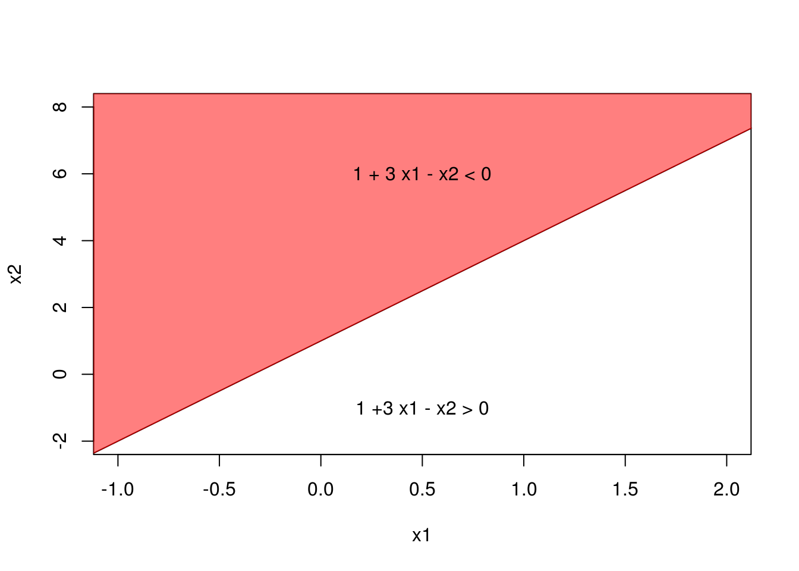
x1<-seq(-2,3,by=.01) x2 <- 1+3*x1 plot(x1,x2,type="l",xlim=c(-1,2),ylim=c(-2,8)) polygon(x=c(-2,-2,3,3),y=c(x2[1],10,10,x2[length(x2)]),density=NA,col=rgb(1,0,0,.5)) text(x=.5,y=6,"1 + 3 x1 - x2 < 0") text(x=.5,y=-1,"1 +3 x1 - x2 > 0")x2 <- 1 - .5*x1 plot(x1,x2,type="l",xlim=c(-1,2),ylim=c(-1,2)) polygon(x=c(-2,-2,3,3),y=c(x2[1],10,10,x2[length(x2)]),col=rgb(1,0,0,.5)) text(x=.5,y=1.5,"-2 + x1 + 2 x2 > 0") text(x=.5,y=0,"-2 + x1 + 2 x2 < 0")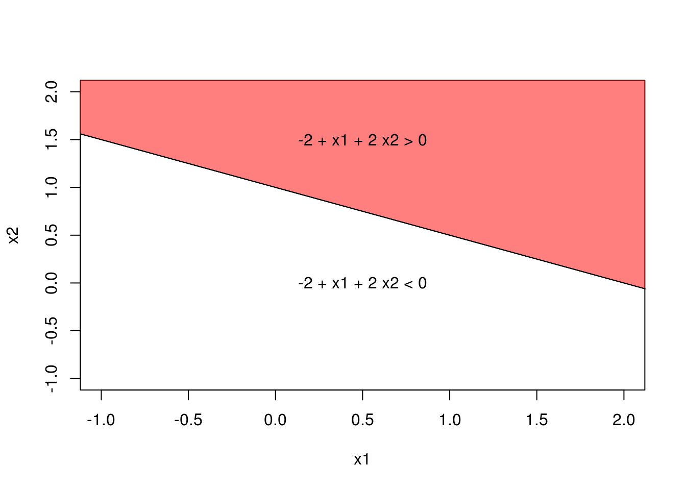
- This is the equation of a circle centered at (-1,2) with radius 2.
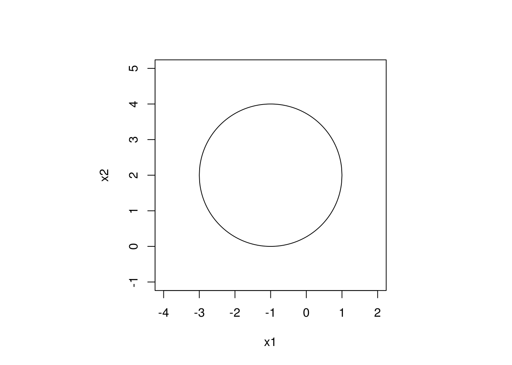par(pty="s") #set plot to be square so we don't distort the circle. plot(x=c(-4,2),y=c(-1,5),type="n",xlab="x1",ylab="x2") x<-seq(-3,1,by=.01) y <- sqrt(4-(x+1)^2) xrev <- x[length(x):1] yrev <- y[length(y):1] polygon(c(x,xrev),c(y+2,-yrev+2))- The points \((1+X_1)^2 + (2-X_2)^2 \leq 4\) are inside the circle.
xrev <- x[length(x):1] yrev <- y[length(y):1] par(pty="s") #set plot to be square so we don't distort the circle. plot(x=c(-4,2),y=c(-1,5),type="n",xlab="x1",ylab="x2") rect(-5,-5,10,10,col=rgb(0,0,1,.5)) #Outside the circle is blue for part c polygon(c(x,xrev),c(y+2,-yrev+2),col=rgb(1,0,0,.5)) text(x=-1,y=2,"(1+X_1)^2+(2-X_2)^2<=4")
- \((0,0)\) is blue, \((-1,1)\) is red, \((2,2)\) is blue, \((3,8)\) is blue.
- If we expand the quadratic terms, we can see this, \[\begin{equation} (1+X_1)^2 + (2-X_2)^2 = 1 + 2X_1 + X_1^2 + 2 - 4X_2 + X_2^2 \end{equation}\]
- 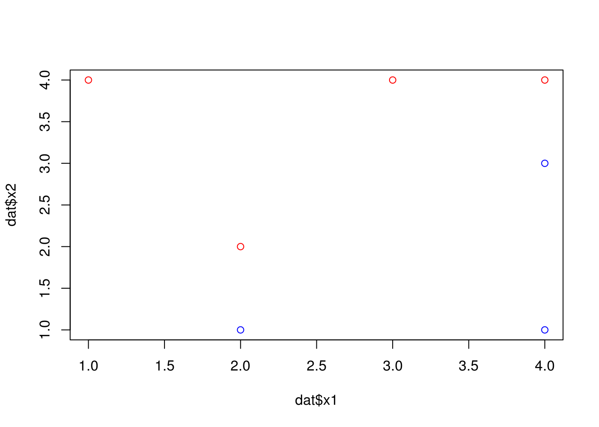
dat<-data.frame( x1=c(3,2,4,1,2,4,4), x2=c(4,2,4,4,1,3,1), y =rep(c("red","blue"),length.out=7,each=4) ) plot(dat$x1,dat$x2,col=as.character(dat$y))- The optimal hyperplane goes through (2,1.5) and (4,3.5). Using linear equations then the equation for the hyperplane becomes \(-0.5+X_1-X_2=0\).
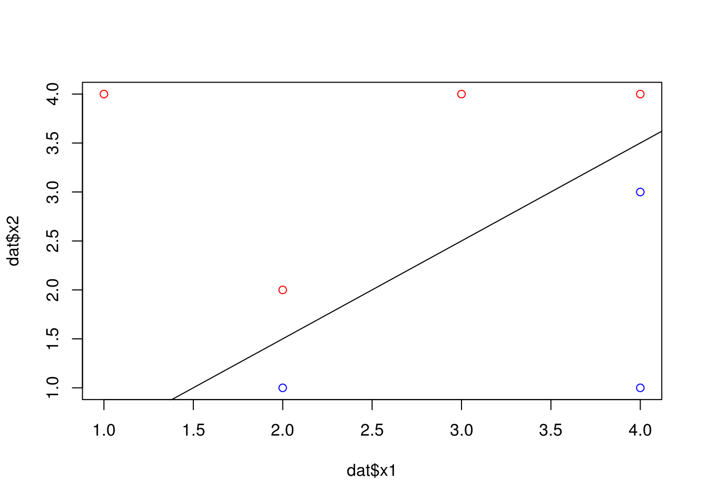plot(dat$x1,dat$x2,col=as.character(dat$y)) abline(-0.5,1)- We would classify as red if \(-0.5+X_1-X_2<0\) and blue otherwise. The values the \(\beta\)’s are \(\beta_0=-0.5\), \(\beta_1=1\), and \(\beta_2=-1\).
plot(dat$x1,dat$x2,col=as.character(dat$y)) abline(-0.5,1) lines(c(2,2),c(1,2),lty=2) lines(c(4,4),c(3,4),lty=2) text(3.9,3.6,"M=1")
- See the last plot.
- The seventh obsevation is in the bottom right so it’s far from the hyperplane.
- We can have a line go through the bottom most red observation and the top most blue observation. This is a worst case hyperplane. The equation of this would be \(1 + .5X_1 - X_2 = 0\)
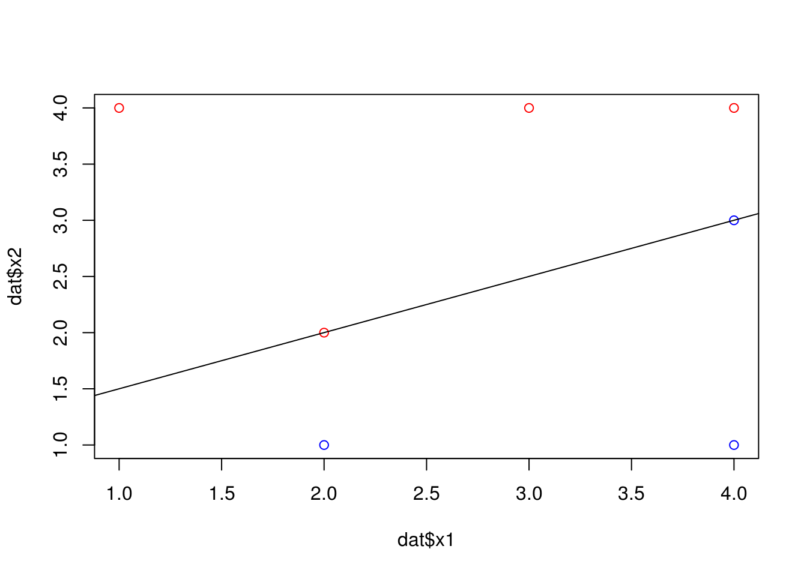plot(dat$x1,dat$x2,col=as.character(dat$y)) abline(1,.5)dat2 <- rbind(dat,c(2,2.5,"blue")) with(dat2,plot(x1,x2,col=as.character(y)))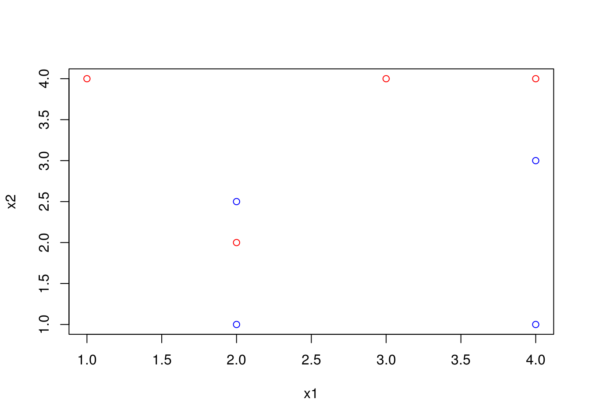
I use a cubic polynomial to separate the data.
x<-sort(rnorm(100,1,2)) y<-rnorm(100) f <- function(x) 1.5*(x)*(x-1)*(x-3) labs<-factor(ifelse(y>f(x),"black","red")) plot(x,y,col=labs) lines(x,f(x))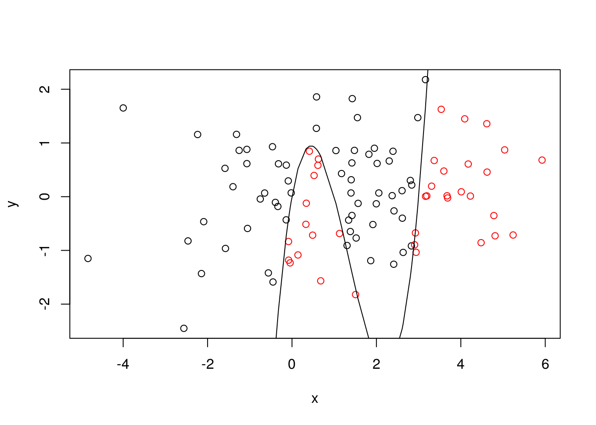 Now to classify with SVM.
library(e1071) set.seed(1) train<-sample.int(100,80) dat <- data.frame(x,labs) (poly.tune<-tune(svm,labs~.,data=dat[train,],kernel="polynomial",ranges=list(d=1:5,cost=c(.001,.01,.1,1,10))))## ## Parameter tuning of 'svm': ## ## - sampling method: 10-fold cross validation ## ## - best parameters: ## d cost ## 3 1 ## ## - best performance: 0.175set.seed(1) (exp.tune <-tune(svm,labs~.,data=dat[train,],kernel="radial",ranges=list(gamma=c(.01,.05,.1,.5,1,5),cost=c(.001,.01,.1,10))))## ## Parameter tuning of 'svm': ## ## - sampling method: 10-fold cross validation ## ## - best parameters: ## gamma cost ## 1 10 ## ## - best performance: 0.15Now we test the best poly versus the best radial on the test set.
poly.mod <- svm(labs~.,data=dat[train,],kernel="polynomial",d=poly.tune$best.parameters$d,cost=poly.tune$best.parameters$cost) exp.mod <- svm(labs~.,data=dat[train,],kernel="radial",gamma=exp.tune$best.parameters$gamma,cost=exp.tune$best.parameters$cost) library(ROCR)## Loading required package: gplots## ## Attaching package: 'gplots'## The following object is masked from 'package:stats': ## ## lowess## Loading required package: methodsrocplot=function(pred, truth, ...){ predob = prediction(pred, truth) perf = performance(predob , "tpr", "fpr") plot(perf,...) } fitted=attributes(predict(poly.mod,dat[-train,],decision.values=T))$decision.values rocplot(-fitted,dat[-train,"labs"],main="Test Data") #for some reason, I have to make the #fitted values negative for the ROC curve to display correctly. fitted=attributes(predict(exp.mod,dat[-train,],decision.values=T))$decision.values rocplot(-fitted,dat[-train,"labs"],add=T,col="red")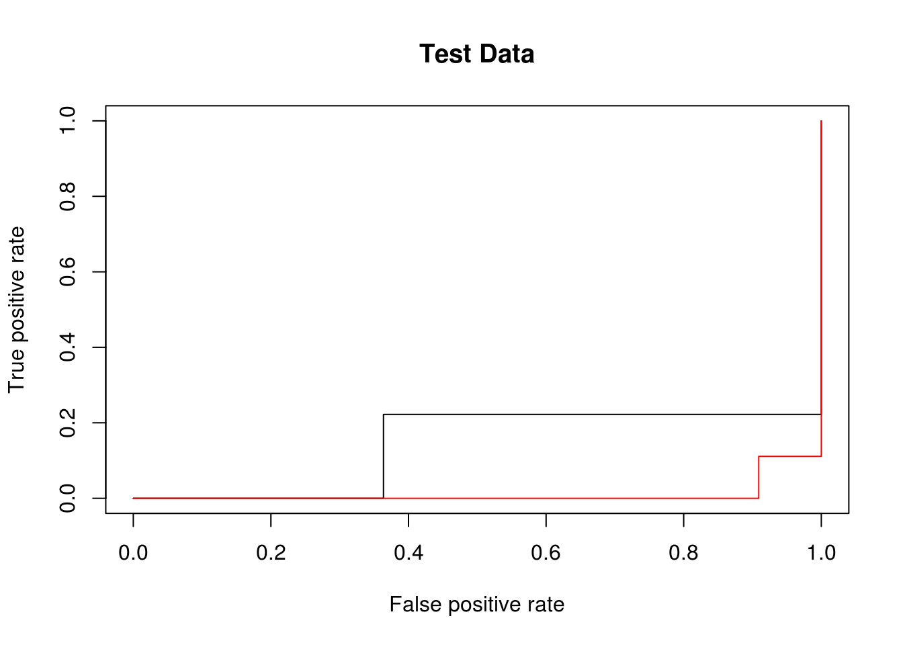 The ROC curve tells us that the radial kernel works best. The tables below show how the final models classified. They ended up performing just as well as each other on the data.
poly.fit=predict(poly.mod,dat[-train,]) table(poly.fit,dat[-train,]$labs)## ## poly.fit black red ## black 9 2 ## red 1 8exp.fit=predict(poly.mod,dat[-train,]) table(exp.fit,dat[-train,]$labs)## ## exp.fit black red ## black 9 2 ## red 1 8- I will copy their example.
set.seed(927) x1<-runif(500)-0.5 x2<-runif(500)-0.5 yn <- (x1^2-x2^2 > 0)*1 y<-factor(yn) dat <- data.frame(y,x1,x2)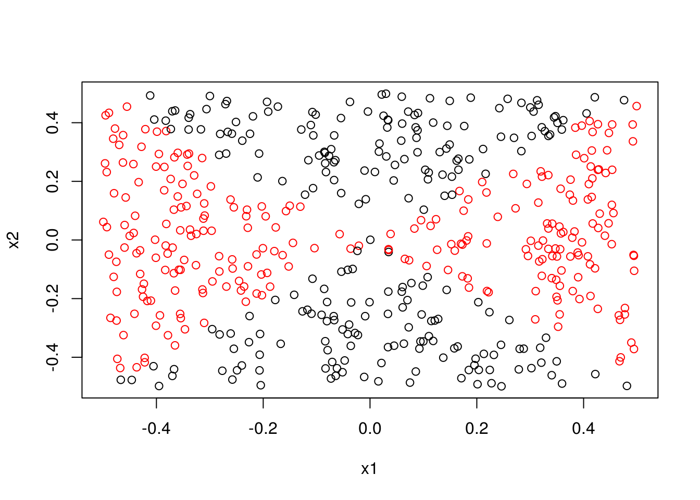plot(x1,x2,col=yn+1)log.mod <- glm(y ~ x1+x2,family=binomial,data=dat)y.pred<-predict(log.mod,type="response") y.pred<-1*(y.pred>.5) plot(x1,x2,col=y.pred+1)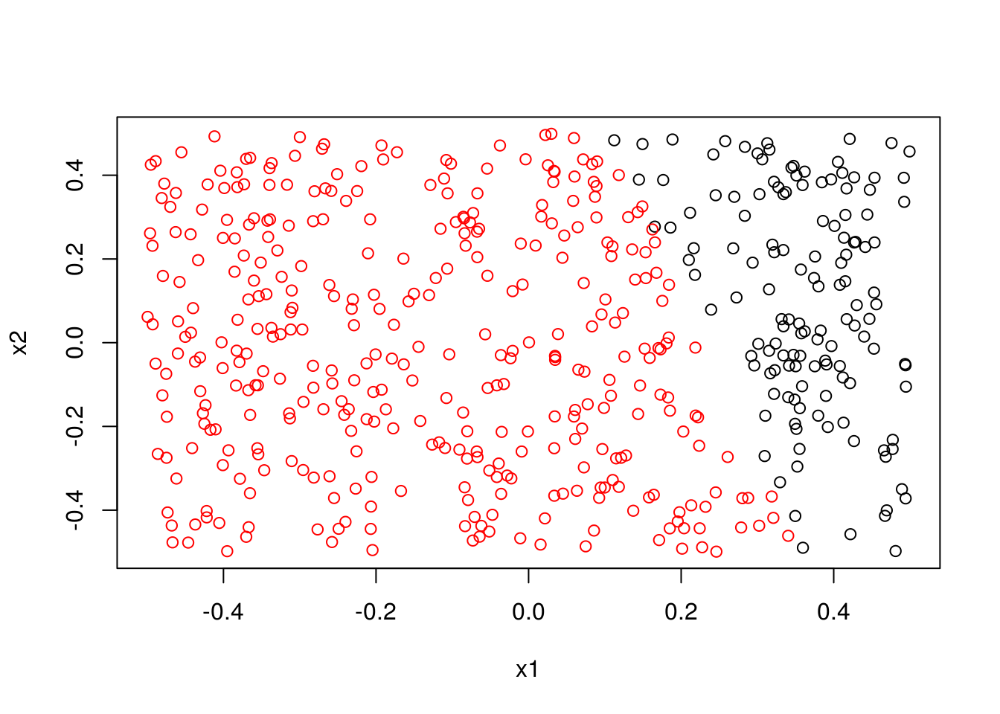 Note that not a single value was predicted to be 0.
any(predict(log.mod,type="response")<.5)## [1] FALSElog.nl.mod <- glm(y ~ poly(x1,d=3)*poly(x2,d=3),family=binomial)## Warning: glm.fit: fitted probabilities numerically 0 or 1 occurredsummary(log.nl.mod)
Logistic regression does poorly at capturing the model.## ## Call: ## glm(formula = y ~ poly(x1, d = 3) * poly(x2, d = 3), family = binomial) ## ## Deviance Residuals: ## Min 1Q Median 3Q Max ## -8.49 0.00 0.00 0.00 0.00 ## ## Coefficients: ## Estimate Std. Error z value ## (Intercept) 4.255e+14 3.020e+06 140857273 ## poly(x1, d = 3)1 5.289e+15 6.772e+07 78097144 ## poly(x1, d = 3)2 3.877e+16 6.783e+07 571602809 ## poly(x1, d = 3)3 6.228e+15 6.772e+07 91976090 ## poly(x2, d = 3)1 -5.832e+14 6.782e+07 -8599865 ## poly(x2, d = 3)2 -4.425e+16 6.806e+07 -650251173 ## poly(x2, d = 3)3 1.326e+15 6.807e+07 19473864 ## poly(x1, d = 3)1:poly(x2, d = 3)1 -5.205e+16 1.541e+09 -33780291 ## poly(x1, d = 3)2:poly(x2, d = 3)1 -1.357e+16 1.563e+09 -8683002 ## poly(x1, d = 3)3:poly(x2, d = 3)1 -1.616e+17 1.567e+09 -103123323 ## poly(x1, d = 3)1:poly(x2, d = 3)2 -1.575e+17 1.544e+09 -101992263 ## poly(x1, d = 3)2:poly(x2, d = 3)2 1.608e+17 1.527e+09 105303315 ## poly(x1, d = 3)3:poly(x2, d = 3)2 4.657e+15 1.577e+09 2952770 ## poly(x1, d = 3)1:poly(x2, d = 3)3 4.136e+16 1.554e+09 26619396 ## poly(x1, d = 3)2:poly(x2, d = 3)3 -3.706e+16 1.572e+09 -23575777 ## poly(x1, d = 3)3:poly(x2, d = 3)3 -4.545e+16 1.581e+09 -28749642 ## Pr(>|z|) ## (Intercept) <2e-16 *** ## poly(x1, d = 3)1 <2e-16 *** ## poly(x1, d = 3)2 <2e-16 *** ## poly(x1, d = 3)3 <2e-16 *** ## poly(x2, d = 3)1 <2e-16 *** ## poly(x2, d = 3)2 <2e-16 *** ## poly(x2, d = 3)3 <2e-16 *** ## poly(x1, d = 3)1:poly(x2, d = 3)1 <2e-16 *** ## poly(x1, d = 3)2:poly(x2, d = 3)1 <2e-16 *** ## poly(x1, d = 3)3:poly(x2, d = 3)1 <2e-16 *** ## poly(x1, d = 3)1:poly(x2, d = 3)2 <2e-16 *** ## poly(x1, d = 3)2:poly(x2, d = 3)2 <2e-16 *** ## poly(x1, d = 3)3:poly(x2, d = 3)2 <2e-16 *** ## poly(x1, d = 3)1:poly(x2, d = 3)3 <2e-16 *** ## poly(x1, d = 3)2:poly(x2, d = 3)3 <2e-16 *** ## poly(x1, d = 3)3:poly(x2, d = 3)3 <2e-16 *** ## --- ## Signif. codes: 0 '***' 0.001 '**' 0.01 '*' 0.05 '.' 0.1 ' ' 1 ## ## (Dispersion parameter for binomial family taken to be 1) ## ## Null deviance: 689.27 on 499 degrees of freedom ## Residual deviance: 3460.19 on 484 degrees of freedom ## AIC: 3492.2 ## ## Number of Fisher Scoring iterations: 24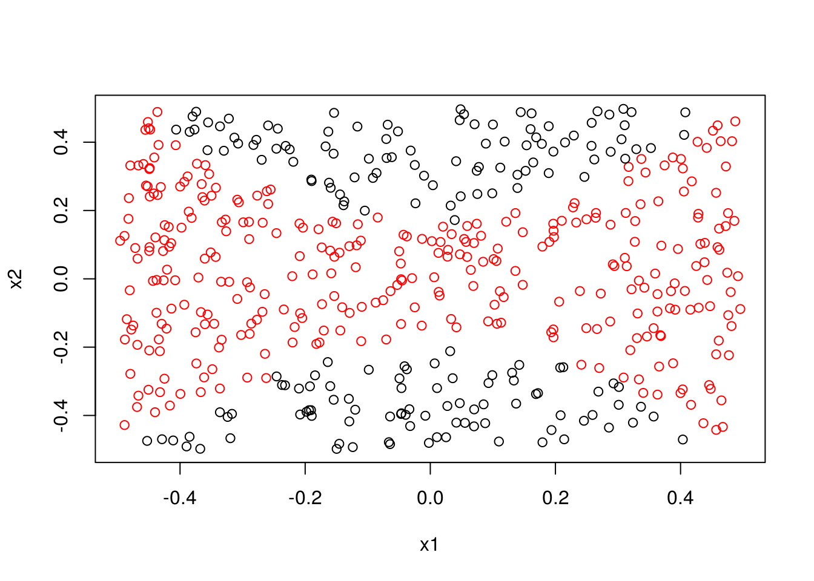 Looks better, but there is still misclassification.y.pred<-predict(log.nl.mod,type="response") y.pred<-1*(y.pred>.5) plot(x1,x2,col=y.pred+1)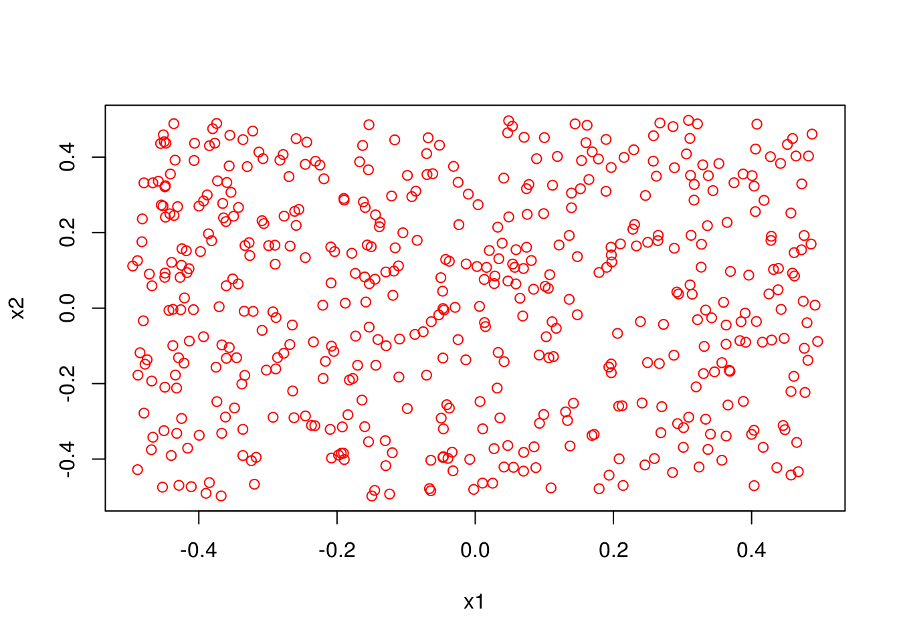svm.lin.mod <- svm(y ~ x1 + x2, data=dat, kernel="linear") svm.lin.pred <- predict(svm.lin.mod) plot(x1,x2,col=svm.lin.pred)svm.mod <- svm(y ~ x1 + x2, data=dat, kernel="polynomial", d=3, cost=1) svm.pred <- predict(svm.mod) plot(x1,x2,col=svm.pred)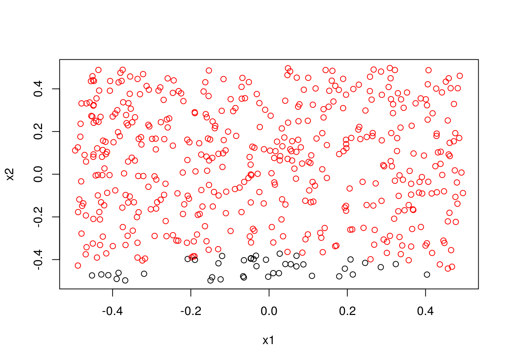
svm.mod <- svm(y ~ x1 + x2, data=dat, kernel="radial", cost=1) svm.pred <- predict(svm.mod) plot(x1,x2,col=svm.pred)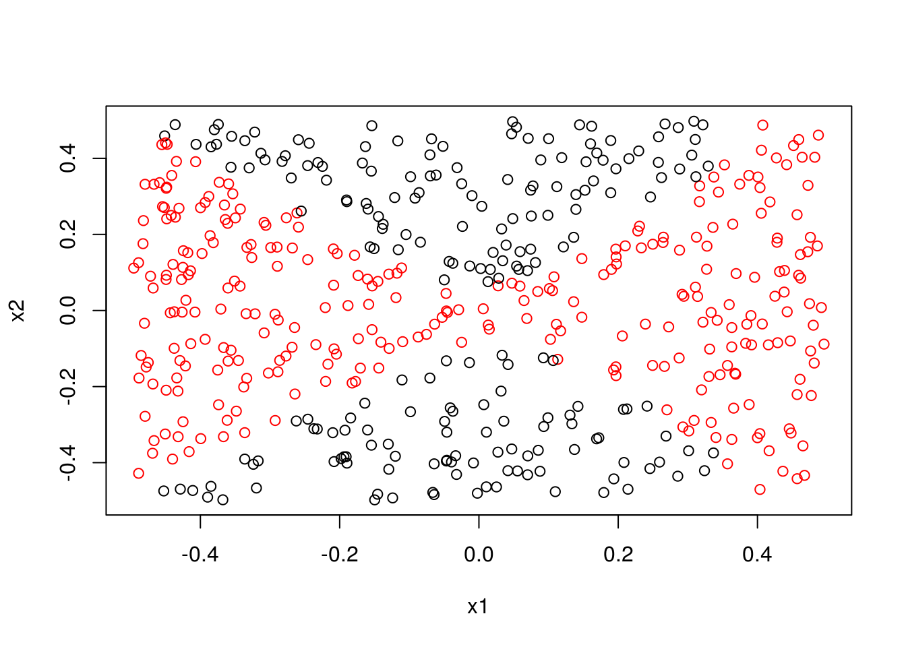
svm.trn.mod <- svm(y~poly(x1,d=2)*poly(x2,d=2),data=dat,kernel="linear") svm.trn.pred <- predict(svm.trn.mod) plot(x1,x2,col=svm.trn.pred)
- The SvM with the transformed predictors and linear kernel seems to do the best.
set.seed(927) n<-50 x<-matrix(runif(n*2),ncol=2) y<-factor(x[,2]>x[,1]) dat<-data.frame(x,y) costs <- 10^(seq(-3,3,by=.5)) res<-tune(svm,y~X1+X2,data=dat,kernel="linear",ranges=list(cost=costs)) summary(res)
The best cost is 1.## ## Parameter tuning of 'svm': ## ## - sampling method: 10-fold cross validation ## ## - best parameters: ## cost ## 1 ## ## - best performance: 0 ## ## - Detailed performance results: ## cost error dispersion ## 1 1.000000e-03 0.44 0.24585452 ## 2 3.162278e-03 0.44 0.24585452 ## 3 1.000000e-02 0.44 0.24585452 ## 4 3.162278e-02 0.14 0.18973666 ## 5 1.000000e-01 0.12 0.13984118 ## 6 3.162278e-01 0.08 0.13984118 ## 7 1.000000e+00 0.00 0.00000000 ## 8 3.162278e+00 0.02 0.06324555 ## 9 1.000000e+01 0.00 0.00000000 ## 10 3.162278e+01 0.00 0.00000000 ## 11 1.000000e+02 0.00 0.00000000 ## 12 3.162278e+02 0.00 0.00000000 ## 13 1.000000e+03 0.00 0.00000000set.seed(1) best.cost <- res$best.parameters$cost test.x <- matrix(runif(10*n*2),ncol=2) test.y<-factor(test.x[,2]>test.x[,1]) test.dat<-data.frame(test.x,y=test.y) cost.performances <- double(length(costs)) for(i in seq_along(costs)) { c <- costs[i] svm.mod <- svm(y ~ X1 + X2, data=dat, kernel="linear",cost=c) pred.y <- predict(svm.mod,test.dat) cost.performances[i] <- mean(pred.y==test.y) } cbind(costs,cost.performances)## costs cost.performances ## [1,] 1.000000e-03 0.516 ## [2,] 3.162278e-03 0.516 ## [3,] 1.000000e-02 0.516 ## [4,] 3.162278e-02 0.846 ## [5,] 1.000000e-01 0.872 ## [6,] 3.162278e-01 0.928 ## [7,] 1.000000e+00 0.958 ## [8,] 3.162278e+00 0.968 ## [9,] 1.000000e+01 0.978 ## [10,] 3.162278e+01 0.986 ## [11,] 1.000000e+02 0.986 ## [12,] 3.162278e+02 0.986 ## [13,] 1.000000e+03 0.986data(Auto,package="ISLR") Auto$mpg01 <- with(Auto,factor(mpg > median(mpg)))set.seed(1) costs <- 10^(seq(-2,4,by=.5)) lin.res <- tune(svm, mpg01 ~ ., data=Auto, ranges=list(cost=costs), kernel="linear") lin.res## ## Parameter tuning of 'svm': ## ## - sampling method: 10-fold cross validation ## ## - best parameters: ## cost ## 1 ## ## - best performance: 0.01275641set.seed(2) gammas <- 10^(seq(-3,-1,by=1)) costs2 <- 10^(seq(0,4,by=1)) rad.res <- tune(svm, mpg01 ~ ., data=Auto, ranges=list(cost=costs,gamma=gammas),kernel="radial") summary(rad.res)## ## Parameter tuning of 'svm': ## ## - sampling method: 10-fold cross validation ## ## - best parameters: ## cost gamma ## 316.2278 0.001 ## ## - best performance: 0.007628205 ## ## - Detailed performance results: ## cost gamma error dispersion ## 1 1.000000e-02 0.001 0.561089744 0.05185229 ## 2 3.162278e-02 0.001 0.561089744 0.05185229 ## 3 1.000000e-01 0.001 0.530384615 0.07484076 ## 4 3.162278e-01 0.001 0.099487179 0.04398264 ## 5 1.000000e+00 0.001 0.091794872 0.05118295 ## 6 3.162278e+00 0.001 0.076538462 0.04000717 ## 7 1.000000e+01 0.001 0.068910256 0.03816032 ## 8 3.162278e+01 0.001 0.053525641 0.03480644 ## 9 1.000000e+02 0.001 0.022948718 0.01890223 ## 10 3.162278e+02 0.001 0.007628205 0.01228382 ## 11 1.000000e+03 0.001 0.015320513 0.01318724 ## 12 3.162278e+03 0.001 0.020384615 0.01594939 ## 13 1.000000e+04 0.001 0.035705128 0.02442271 ## 14 1.000000e-02 0.010 0.561089744 0.05185229 ## 15 3.162278e-02 0.010 0.099487179 0.05018848 ## 16 1.000000e-01 0.010 0.089230769 0.04828946 ## 17 3.162278e-01 0.010 0.079102564 0.03507425 ## 18 1.000000e+00 0.010 0.073974359 0.03703948 ## 19 3.162278e+00 0.010 0.053525641 0.03480644 ## 20 1.000000e+01 0.010 0.023012821 0.01891104 ## 21 3.162278e+01 0.010 0.017820513 0.02088734 ## 22 1.000000e+02 0.010 0.017884615 0.01234314 ## 23 3.162278e+02 0.010 0.022948718 0.01871043 ## 24 1.000000e+03 0.010 0.025512821 0.02076457 ## 25 3.162278e+03 0.010 0.025512821 0.02076457 ## 26 1.000000e+04 0.010 0.025512821 0.02076457 ## 27 1.000000e-02 0.100 0.239679487 0.05626150 ## 28 3.162278e-02 0.100 0.081602564 0.03753398 ## 29 1.000000e-01 0.100 0.076538462 0.03187731 ## 30 3.162278e-01 0.100 0.068910256 0.03619541 ## 31 1.000000e+00 0.100 0.053589744 0.03060885 ## 32 3.162278e+00 0.100 0.028141026 0.02550614 ## 33 1.000000e+01 0.100 0.028141026 0.03070454 ## 34 3.162278e+01 0.100 0.033269231 0.03833365 ## 35 1.000000e+02 0.100 0.035833333 0.03862318 ## 36 3.162278e+02 0.100 0.035833333 0.03862318 ## 37 1.000000e+03 0.100 0.035833333 0.03862318 ## 38 3.162278e+03 0.100 0.035833333 0.03862318 ## 39 1.000000e+04 0.100 0.035833333 0.03862318set.seed(3) poly.res <- tune(svm, mpg01 ~ ., data=Auto, ranges=list(cost=costs,d=2:4),kernel="polynomial") summary(poly.res)
The error was 0.0101.## ## Parameter tuning of 'svm': ## ## - sampling method: 10-fold cross validation ## ## - best parameters: ## cost d ## 10000 3 ## ## - best performance: 0.08903846 ## ## - Detailed performance results: ## cost d error dispersion ## 1 1.000000e-02 2 0.56333333 0.05501778 ## 2 3.162278e-02 2 0.56333333 0.05501778 ## 3 1.000000e-01 2 0.56333333 0.05501778 ## 4 3.162278e-01 2 0.56333333 0.05501778 ## 5 1.000000e+00 2 0.56333333 0.05501778 ## 6 3.162278e+00 2 0.56333333 0.05501778 ## 7 1.000000e+01 2 0.49935897 0.13927297 ## 8 3.162278e+01 2 0.38442308 0.09577897 ## 9 1.000000e+02 2 0.29301282 0.09219705 ## 10 3.162278e+02 2 0.30865385 0.09147957 ## 11 1.000000e+03 2 0.21647436 0.09448024 ## 12 3.162278e+03 2 0.15557692 0.06591321 ## 13 1.000000e+04 2 0.14532051 0.07471306 ## 14 1.000000e-02 3 0.56333333 0.05501778 ## 15 3.162278e-02 3 0.56333333 0.05501778 ## 16 1.000000e-01 3 0.56333333 0.05501778 ## 17 3.162278e-01 3 0.56333333 0.05501778 ## 18 1.000000e+00 3 0.56333333 0.05501778 ## 19 3.162278e+00 3 0.56333333 0.05501778 ## 20 1.000000e+01 3 0.56333333 0.05501778 ## 21 3.162278e+01 3 0.51467949 0.10767554 ## 22 1.000000e+02 3 0.34083333 0.11384621 ## 23 3.162278e+02 3 0.27000000 0.09019716 ## 24 1.000000e+03 3 0.25480769 0.08064661 ## 25 3.162278e+03 3 0.23942308 0.08048794 ## 26 1.000000e+04 3 0.08903846 0.06849379 ## 27 1.000000e-02 4 0.56333333 0.05501778 ## 28 3.162278e-02 4 0.56333333 0.05501778 ## 29 1.000000e-01 4 0.56333333 0.05501778 ## 30 3.162278e-01 4 0.56333333 0.05501778 ## 31 1.000000e+00 4 0.56333333 0.05501778 ## 32 3.162278e+00 4 0.56333333 0.05501778 ## 33 1.000000e+01 4 0.56333333 0.05501778 ## 34 3.162278e+01 4 0.56333333 0.05501778 ## 35 1.000000e+02 4 0.56333333 0.05501778 ## 36 3.162278e+02 4 0.56333333 0.05501778 ## 37 1.000000e+03 4 0.51724359 0.12131501 ## 38 3.162278e+03 4 0.47891026 0.08470192 ## 39 1.000000e+04 4 0.41250000 0.08952316- We know that the mpg varies a lot with weight and acceleration.
svm.lin <- lin.res$best.model plot(svm.lin, Auto, weight ~ displacement)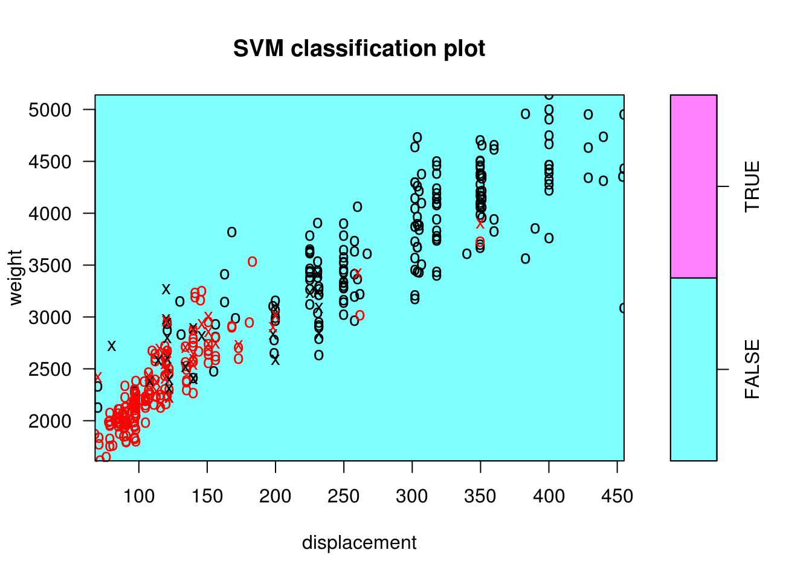
svm.rad <- rad.res$best.model plot(svm.rad, Auto, weight ~ displacement)svm.poly <- poly.res$best.model plot(svm.poly, Auto, weight ~ displacement) We can see that
We can see thatdata(OJ,package="ISLR") set.seed(927) train <- sample.int(nrow(OJ), size=800)library(e1071) svm.class <- svm(Purchase ~ ., data=OJ[train,], cost=0.01, kernel="linear") summary(svm.class)## ## Call: ## svm(formula = Purchase ~ ., data = OJ[train, ], cost = 0.01, ## kernel = "linear") ## ## ## Parameters: ## SVM-Type: C-classification ## SVM-Kernel: linear ## cost: 0.01 ## gamma: 0.05555556 ## ## Number of Support Vectors: 441 ## ## ( 220 221 ) ## ## ## Number of Classes: 2 ## ## Levels: ## CH MM#Training error class.train.pred <- predict(svm.class) pur.train <- OJ[train,"Purchase"] (class.train.err <- mean(pur.train != class.train.pred))## [1] 0.16875#Test error class.test.pred <- predict(svm.class, OJ[-train,]) pur.test <- OJ[-train,"Purchase"] (class.test.err <- mean(pur.test != class.test.pred))## [1] 0.1407407set.seed(927) costs<-10^seq(-2,2,by=.25) class.res <- tune(svm, Purchase ~ ., data=OJ[train,], ranges=list(cost=costs), kernel="linear") summary(class.res)## ## Parameter tuning of 'svm': ## ## - sampling method: 10-fold cross validation ## ## - best parameters: ## cost ## 0.5623413 ## ## - best performance: 0.17125 ## ## - Detailed performance results: ## cost error dispersion ## 1 0.01000000 0.18000 0.05244044 ## 2 0.01778279 0.18125 0.05212498 ## 3 0.03162278 0.17875 0.05714565 ## 4 0.05623413 0.17750 0.05130248 ## 5 0.10000000 0.17625 0.05478810 ## 6 0.17782794 0.17250 0.05614960 ## 7 0.31622777 0.17250 0.05329426 ## 8 0.56234133 0.17125 0.05497790 ## 9 1.00000000 0.17250 0.05886661 ## 10 1.77827941 0.17250 0.05676462 ## 11 3.16227766 0.17250 0.05583955 ## 12 5.62341325 0.17500 0.05368374 ## 13 10.00000000 0.17750 0.05394184 ## 14 17.78279410 0.17750 0.05521423 ## 15 31.62277660 0.17625 0.05084358 ## 16 56.23413252 0.17750 0.05096295 ## 17 100.00000000 0.17875 0.05104804#Training error #svm.best.class <- svm(Purchase ~ ., data=OJ[train,], cost=class.res$best.parameters$cost, kernel="linear") svm.best.class <- class.res$best.model svm.best.class.pred <- predict(svm.best.class) (best.class.train.err <- mean(pur.train != svm.best.class.pred))## [1] 0.1675#Test error svm.best.class.test <- predict(svm.best.class, OJ[-train,]) (best.class.test.err <- mean(pur.test != svm.best.class.test))## [1] 0.162963